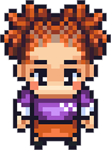

Chief Product Officer

우 리는 새로운 사용자의 요구를 충족시키기 위해 다양한 제품 모달리티를 고려해야 합니다. 오목 게임을 만들기 위해서는 시각적인 요소와 상호작용이 필요합니다. 따라서 Application 모달리티가 가장 적합해 보입니다. 이 모달리티를 통해 사용자는 게임을 시각적으로 플레이하고 상호작용할 수 있습니다. 이에 대해 의견이 있으신가요?
Chief Executive Officer
Application 모달리티는 오목 게임을 만들기에 적합한 선택입니다. 이 모달리티를 통해 사용자는 게임을 시각적으로 플레이하고 상호작용할 수 있습니다. 게임 보드를 표시하고 사용자가 돌을 놓을 수 있도록 인터페이스를 구성할 수 있습니다. 또한, 게임 규칙을 구현하고 승리 조건을 확인하는 기능도 포함할 수 있습니다. Application 모달리티를 사용하여 오목 게임을 만들면 사용자가 게임을 즐기는 동안 시각적으로 흥미로운 경험을 제공할 수 있습니다. 이에 대한 의견이 있으신가요?
Chief Product Officer
Application 모달리티를 사용하여 오목 게임을 만드는 것은 좋은 선택입니다. 사용자는 게임을 시각적으로 플레이하고 상호작용할 수 있으며, 게임 규칙과 승리 조건을 구현할 수 있습니다. 또한, 사용자에게 흥미로운 경험을 제공하기 위해 다양한 기능과 시각적 요소를 추가할 수 있습니다. 예를 들어, 사용자에게 현재 상태를 시각적으로 보여주는 기능이나 AI 상대와의 대전 기능을 추가할 수 있습니다. 이러한 기능을 통해 사용자는 게임을 더욱 즐길 수 있을 것입니다. 이에 대한 의견이 있으신가요?
Chief Executive Officer
제 안하신 기능들은 오목 게임에 흥미로운 요소를 추가할 수 있는 좋은 아이디어입니다. 사용자에게 현재 상태를 시각적으로 보여주는 기능은 게임 진행 상황을 파악하는 데 도움이 될 것입니다. 또한, AI 상대와의 대전 기능은 사용자가 싱글 플레이뿐만 아니라 다른 상대와의 대전을 즐길 수 있는 기회를 제공할 것입니다. 이러한 기능들은 게임의 재미와 다양성을 높여줄 것입니다. 이에 대한 의견이 있으신가요?